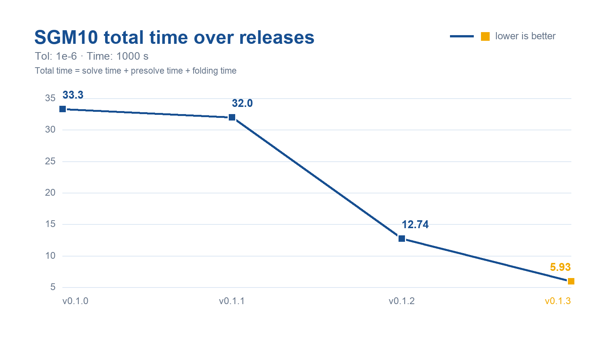
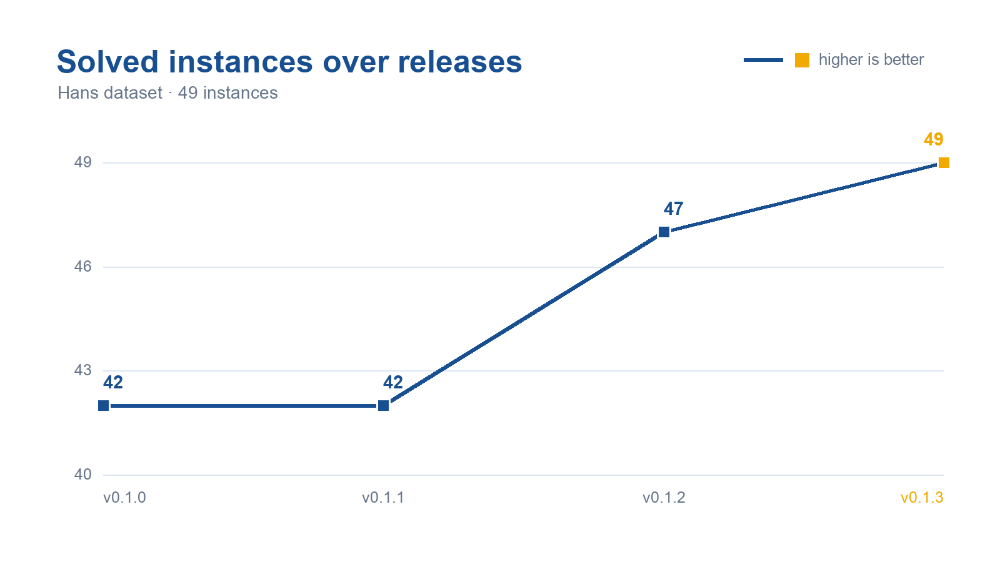

C Version
Source: official HPR-LP-C documentation.
HPR-LP-C is a GPU-accelerated C/CUDA implementation of the Halpern Peaceman–Rachford method for solving linear programming problems.
What’s new in v0.1.3
Version 0.1.3 introduces structure-aware optimizations for large-scale LP solving:
Structure-aware SpMV kernels;
GPU-Presolver-C integration with optional folding;
Sparsity-aware updates.
On the 49-instance Hans benchmark, v0.1.3 solved all 49 instances and reduced the SGM10 total time from 12.74 s to 5.93 s, achieving a 2.15× speedup over v0.1.2.


Quick start
Clone the public repository and build the solver:
git clone https://github.com/PolyU-IOR/HPR-LP-C.git
cd HPR-LP-C
make clean && make -j
./build/solve_mps_file -i data/model.mps --tol 1e-6 --time-limit 1000
For a downloaded release archive:
unzip HPR-LP-C-0.1.3.zip
cd HPR-LP-C-0.1.3
make clean && make -j
./build/solve_mps_file -i data/model.mps --tol 1e-6 --time-limit 1000
The build creates:
build/solve_mps_file;lib/libhprlp.a; andlib/libhprlp.so.
The Makefile detects the first visible GPU through nvidia-smi, so no
architecture argument is needed for these GPU families:
GPU family |
Compute capability |
Build architecture |
|---|---|---|
NVIDIA B200 |
10.0 |
|
NVIDIA H100 |
9.0 |
|
NVIDIA A100 |
8.0 |
|
GeForce RTX 30 series |
8.6 |
|
GeForce RTX 40 series |
8.9 |
|
GeForce RTX 50 series |
12.0 |
|
The numeric compute capability is preferred; GPU-name matching provides a
fallback for nvidia-smi versions that cannot report it. Build with:
make clean && make -j
The selected CUDA Toolkit must support the detected architecture. If no GPU is
visible, nvcc chooses its supported default. Run make help to inspect the
selection; GPU_SM=<arch> remains available for cross-builds.
Features
Reads free or fixed MPS files, including
.mps.gz.Provides a command-line solver and C/C++ library.
Supports selectable embedded PSLP or GPU-Presolver-C presolve and postsolve.
Supports batched LPs that share one sparse constraint matrix.
Provides optional Python, Julia, and MATLAB interfaces.
Automatically selects eligible CUDA implementations from verified matrix structure;
--cusparse-spmv trueforces the cuSPARSE path.Amortizes normal-iteration launch overhead with a boundary-safe, fixed-size CUDA graph batch.
Requirements
The core solver requires:
Linux on x86-64;
an NVIDIA GPU supported by the selected CUDA Toolkit;
an NVIDIA CUDA Toolkit including
nvcc, cuBLAS, cuSOLVER, cuSPARSE, and the CUDA driver development library;GCC/G++ with C++17 support, supported by the selected CUDA Toolkit (GCC 9–12 recommended);
GNU Make or CMake 3.18 or newer; and
zlib development headers.
cuSPARSE backend
CUDA 13.3 and newer enable NVIDIA’s experimental cusparseSpMVOp API and use
CUSPARSE_SPMVOP_ALG1. Older toolkits use the regular cusparseSpMV API with
CUSPARSE_SPMV_CSR_ALG2. Selection happens at compile time from the chosen
toolkit headers; no user option is required.
See NVIDIA’s cuSPARSE SpMVOp API reference and CUDA Toolkit 13.3 release notes.
On Ubuntu 22.04:
sudo apt-get update
sudo apt-get install -y build-essential cmake zlib1g-dev
Install the CUDA Toolkit separately using NVIDIA’s instructions. If CUDA is
not installed at /usr/local/cuda, set CUDA_PATH or CUDA_HOME.
CMake build and installation
CUDA_PATH="${CUDA_PATH:-/usr/local/cuda}"
cmake -S . -B build-cmake \
-DCMAKE_BUILD_TYPE=Release \
-DCMAKE_CUDA_COMPILER="$CUDA_PATH/bin/nvcc"
cmake --build build-cmake
cmake --install build-cmake --prefix "$HOME/.local"
The preceding command detects the first visible GPU automatically. For a reproducible H100 cross-build, use a separate build directory and set compute capability 9.0:
CUDA_PATH="${CUDA_PATH:-/usr/local/cuda}"
cmake -S . -B build-h100 \
-DCMAKE_BUILD_TYPE=Release \
-DCMAKE_CUDA_COMPILER="$CUDA_PATH/bin/nvcc" \
-DCMAKE_CUDA_ARCHITECTURES=90
cmake --build build-h100
Using a separate directory prevents cached architecture settings and object
files from being reused for a different GPU. An explicit
CMAKE_CUDA_ARCHITECTURES value always overrides automatic detection.
GPU-Presolver-C backend
The source tree vendors PolyU-IOR/GPU-Presolver-C under
third_party/GPU-Presolver-C. Make and CMake build this backend by default;
its source files and the HPR-LP-C core use the C++/CUDA 17 language standard.
To create a smaller PSLP-only CMake build, set BUILD_GPU_PRESOLVER=OFF.
./build/solve_mps_file \
-i problem.mps.gz \
--presolver gpu \
--gpu-folding true
Use --presolver pslp for the original embedded PSLP path or
--presolver none to solve without presolve.
For a Make-based staged installation:
make clean && make -j
make install PREFIX="$HOME/.local"
Add the selected prefix to PATH and the dynamic-loader path when it is not a
system location:
export PATH="$HOME/.local/bin:$PATH"
export LD_LIBRARY_PATH="$HOME/.local/lib:${LD_LIBRARY_PATH:-}"
Command-line usage
./build/solve_mps_file -i data_path --tol 1e-6 --time-limit 1000
Option |
Description |
Default |
|---|---|---|
|
Input |
required |
|
CUDA device index |
|
|
Maximum iterations |
|
|
Stopping tolerance |
|
|
Time limit in seconds |
|
|
Convergence-check interval |
|
|
Force cuSPARSE normal updates |
|
|
Print backend-selection diagnostics |
|
|
Print detailed presolve, backend, scaling, restart, and timing diagnostics |
|
|
Curtis–Reid prescaling |
|
|
Ruiz scaling |
|
|
Pock–Chambolle scaling |
|
|
Bounds and cost scaling |
|
|
Select presolver backend |
|
|
Enable folding for GPU-Presolver-C |
|
|
Enable adaptive row/column reduction |
|
Boolean values accept true or 1; other values are treated as false.
By default, logs contain the instance name, model dimensions, explicitly
supplied solver options, the iteration table, and a compact solution summary.
Use --print-debug-info true to restore the full diagnostic log.
Reduced-matrix mode is controlled by the single use_reduced_matrix C/C++
parameter (or --reduced-matrix in either dataset runner). When enabled, mask
maintenance begins below a 1e-2 KKT residual. Column entry requires less
than 50% free columns and row entry less than 40% active rows for three stable
checks (or less than 25% immediately). If both candidates are ready, the
solver selects the direction with the smaller retained dimension ratio.
Set HPRLP_USE_ROW_REDUCTION=0 for the former column-only behavior.
Release validation uses --tol 1e-6, --time-limit 1000, and
--check-iter 150; pass these options explicitly when comparing runs.
Hans dataset run and CSV summary
The batch script runs sorted *.mps.gz files, resumes from rows already
present, and rewrites SGM10 and solved rows at the bottom of
HPRLP_result.csv. Pass a comma-separated device list with --devices. One
native Python worker process is bound to each device; whenever it finishes an
instance, it takes the next pending instance. The runner reads timing,
convergence-milestone, and reduced-matrix statistics directly from the native
result object instead of parsing console output. Completed rows are serialized
into the shared CSV, and line-buffered instance logs are written automatically
to <output directory>/logs/<instance_name>.log. The combined run log remains
in HPRLP_log.txt; --logs-dir can override the instance-log directory, and
--failed-out enables a failed-instance CSV. The existing --device option is
retained as the single-device fallback when --devices is omitted.
Script options and their corresponding HPRLP_* environment variables
configure the native parameters; each worker receives its assigned device.
python -m pip install ./bindings/python
python3 scripts/run_hans_dataset.py \
--data-dir /path/to/Hans \
--out-dir Results/hans \
--presolver gpu \
--gpu-folding true \
--devices 0,1,2 \
--time-limit 1000 \
--tol 1e-6 \
--check-iter 150
Reinstall the Python package after rebuilding or updating HPR-LP-C so the
runner and native result structure stay synchronized. Existing rows are kept
unchanged by --resume; use --no-resume or a new output directory to
regenerate CSV files created by the older console-output parser.
Julia dataset run
The Julia runner uses one isolated Julia process per requested GPU. The next
pending instance is assigned to whichever worker becomes available first;
completed rows are serialized by the parent into results.csv. It resumes from
existing CSV entries by default and writes line-buffered solver output to
logs/<instance_name>.log, with scheduler messages in batch_solve.log.
julia scripts/run_dataset.jl /path/to/Hans Results/julia_hans \
--devices 0,1,2 \
--presolver gpu --gpu-folding true --tol 1e-6 --time-limit 1000
Use --device 0 for the backward-compatible single-device form and
--no-resume to replace an existing CSV. Its CSV includes MPS read time and
every field in HPRLP_time. The progress monitor, progress control, and sigma
rebalance/restart controls follow the current C defaults unless explicitly
overridden by their corresponding command-line options.
C and C++ examples
Build the core library first, then compile and run the examples:
make clean && make -j
make -C examples/c run
make -C examples/cpp run
The public API is declared in include/HPRLP.h. The
examples demonstrate direct array input, MPS input, and batched shared-matrix
solves.
Language interfaces
Python
Python requires Python 3.8 or newer, CMake, pybind11, NumPy, and SciPy. Installation compiles the CUDA core:
python3 -m venv .venv
. .venv/bin/activate
python -m pip install --upgrade pip
python -m pip install ./bindings/python
python bindings/python/examples/example_direct_lp.py
Julia
Build the shared library first, then instantiate the Julia package:
make clean && make -j
bash bindings/julia/install.sh
julia --project=bindings/julia/package \
bindings/julia/examples/example_direct_lp.jl
MATLAB
The MATLAB interface requires Linux, MATLAB R2018a or newer, a compatible MEX compiler, and the CUDA Toolkit:
bash bindings/matlab/install.sh
Runtime behavior and portability
HPR-LP-C has no CPU solver backend.
General structured backends are enabled only after lossless runtime checks. Unsupported matrices use the canonical cuSPARSE implementation:
cusparseSpMVOpon CUDA 13.3+ andcusparseSpMVon older toolkits.CUDA virtual-memory allocation is opportunistic; unsupported systems use ordinary
cudaMalloc.Each binary targets the detected or explicitly selected architecture; it is not portable across incompatible GPU architectures. Plain
makerecognizes B200, H100, A100, and GeForce RTX 30/40/50 series GPUs. For cross-builds, useGPU_SM=<arch>or-DCMAKE_CUDA_ARCHITECTURES=<arch>explicitly.Runtime-selected matrix backends can still differ with model structure.
Troubleshooting
CUDA compiler not found
export CUDA_PATH=/usr/local/cuda
export PATH="$CUDA_PATH/bin:$PATH"
make clean && make -j
On systems with more than one nvcc, prefer the selected CUDA installation
explicitly. Architecture selection remains automatic:
export CUDA_PATH=/usr/local/cuda
export PATH="$CUDA_PATH/bin:$PATH"
make clean && make -j
Unsupported host compiler
Select a GCC version supported by your CUDA release:
sudo apt-get install -y gcc-12 g++-12
make clean && make -j
Version provenance
This portable NVIDIA CUDA edition of version 0.1.3 extends the official
PolyU-IOR/HPR-LP-C 0.1.2 source at
commit 358295ca9af3a9f1413174f2f63e5bdf3032c548. See
CHANGELOG.md for the public changes in this release.
Citation
Kaihuang Chen, Defeng Sun, Yancheng Yuan, Guojun Zhang, and Xinyuan Zhao, “HPR-LP: An implementation of an HPR method for solving linear programming,” Mathematical Programming Computation, 17(4), 2025. DOI: 10.1007/s12532-025-00292-0.
License
HPR-LP-C is released under the MIT License. See LICENSE.
The vendored presolvers retain their own notices in
third_party/PSLP/LICENSE and
third_party/GPU-Presolver-C/LICENSE.
Contributing and support
See CONTRIBUTING.md. For questions or bug reports, open
an issue at https://github.com/PolyU-IOR/HPR-LP-C/issues.